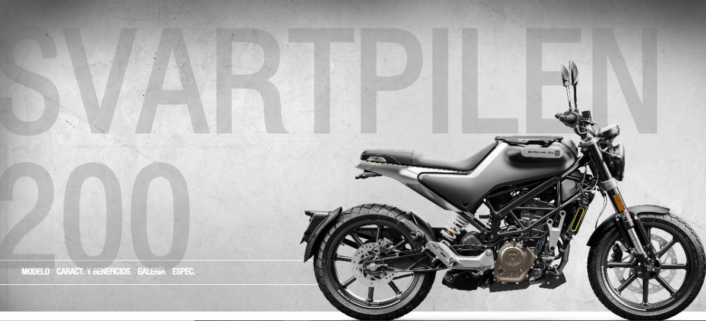

MOTOR, CAJA DE CAMBIOS Y EXTERIOR
La SVARTPILEN 200 está propulsada por un moderno motor monocilíndrico 4 tiempos de 200 cc con doble árbol de levas en cabeza, refrigeración líquida e inyección electrónica.
Este motor, especialmente compacto, proporciona una potencia impresionante y, gracias al eje de balance incorporado, proporciona los más altos niveles de suavidad
Está equipado con un arranque eléctrico alimentado por una batería de 12V/8Ah y alcanza una potencia máxima de 19 kW (26 CV), con un impresionante par motor adaptado a la conducción urbana.
El asiento de perfil rebajado encaja elegantemente en el diseño general de la SVARTPILEN 200 y está tapizado con una combinación de materiales de alta calidad que proporcionan una comodidad y durabilidad superiores.
Un estilo minimalista que combina las ideas clásicas con el diseño moderno.
Esta SVARTPILEN 200 es un claro exponente de la herencia sueca de Husqvarna Motorcycles.
La ligera y esbelta carrocería forma parte del futurista e inteligente diseño de la SVARTPILEN 200, permitiendo una total libertad de movimientos en marcha.
El color oscuro, los neumáticos esculpidos y los diferentes protectores ofrecen a la moto un aspecto robusto en línea con su carácter de exploradora urbana.
Las ruedas ofrecen una sensación única de estilo y son también muy robustas, ofreciendo una máxima fiabilidad frente al impredecible y desafiante terreno urbano.
Los grupos ópticos delantero y trasero son elementos distintivos de la SVARTPILEN 200 y utilizan la última tecnología led, unas luces que son algo más que piezas de diseño, ofreciendo un avanzado rendimiento de iluminación y visibilidad en entornos urbanos.
El tapón de llenado de aluminio muestra con orgullo el logotipo de Husqvarna Motorcycles, como un sello de su alta calidad, destacando de forma discreta pero audaz en el depósito de gasolina.
DISEÑO
PILOTA Y EXPLORA
La gama SVARTPILEN se define por su robustez y su facilidad de uso en el mundo real. Concede a su piloto una sensación de confianza, invitándole a explorar las carreteras secundarias sin importar su estado. Usando una receta probada y comprobada, que combina una posición de pilotaje dominante con un motor lleno de par, la SVARTPILEN va donde otras temen rodar.
UN CLÁSICO MODERNO
Con una silueta icónica, pero con un motor y una electrónica de hoy en día, la gama SVARTPILEN rinde culto a los héroes del dirt track con una tecnología actual. No esconde su legado, pero tiene la vista puesta en el futuro.
Ingresar a Mercado Libre
CARACTERISTICAS
- Arranque eléctrico
- Cambio: 6 marchas
- Estructura: Motor monocilíndrico de 4 tiempos
- ABS Bosch 9.1 MB
- Capacidad del depósito (aprox.): 9.5 l
- Peso (sin combustible): 153 kg
SUSPENSIONES
Las suspensiones WP de la Svartpilen 250 cumplen con los estándares más exigentes, asegurando el máximo nivel de calidad y de fabricación. La suspensión delantera está encomendada a una horquilla tipo Big Piston de 43mm, mientras que en la parte trasera monta un sistema de amortiguación progresivo conectado directamente al basculante. El uso de componentes de alta calidad garantiza un comportamiento dinámico ideal para el atestado tráfico urbano.
CHASIS
El chasis de tipo multitubular es un elemento clave en el carácter y la agilidad de la Svartpilen 250. Fabricado en acero al cromo molibdeno de altar esistencia utilizando tubos hidroformados y soldadura robotizada, el chasis no es tan solo robusto, sino también ligero, asegurando una ágil maniobrabilidad y un gran tacto de pilotaje. Diseñado con unas características de flexión específicas, el chasis funciona en armonía con las supensiones WP para ofrecer un tacto cómodo y seguro, combinado con un reducido águlo de giro para una gran facilidad de uso en entornos urbanos.